WindowContainer의 속성 frameModal을 활성화하였을 때 팝업의 동작을 비교하는 예제입니다. frameModal을 활성화하면 팝업이 Window 내부에서만 이동이 가능하게 되며, 팝업에서 팝업을 호출한 경우 상위 팝업을 닫으면 하위 팝업이 함께 닫힙니다.
이 기능은 WindowContainer의 속성 frameMode가 "wframe"으로 설정된 경우만 동작합니다.
기본 설정 - frameModal 비활성화
frameModal 활성화
영역 [기본 설정 - frameModal 비활성화]의 WindowContainer의 윈도우 "P00123S01"에서 버튼 팝업 열기를 클릭합니다.
[브라우저(Chrome) 실행 예시]
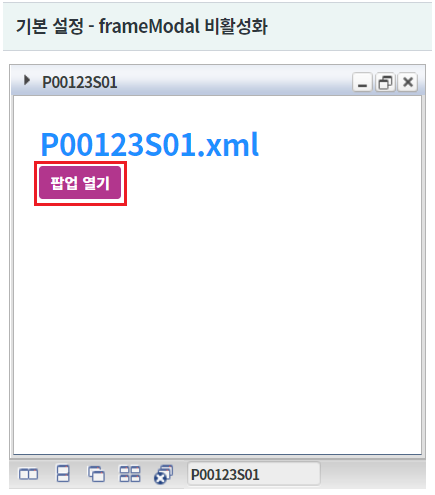
브라우저의 상단에 팝업 "popup1"이 열린 것을 확인합니다.
[브라우저(Chrome) 실행 예시 - PC]
(디바이스에 따라 아래의 참고 이미지가 다를 수 있습니다.)
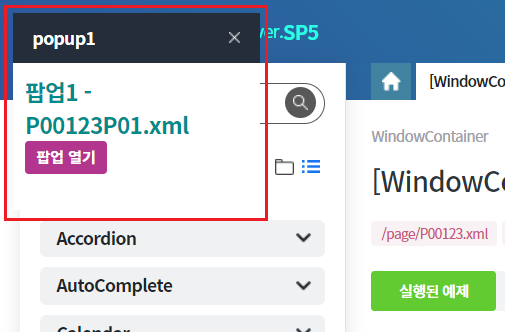
팝업 "popup1"에서 버튼 팝업 열기를 클릭합니다.
[브라우저(Chrome) 실행 예시 - PC]
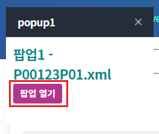
브라우저의 상단에 팝업 "popup1-1"이 열린 것을 확인합니다.
[브라우저(Chrome) 실행 예시 - PC]
(디바이스에 따라 아래의 참고 이미지가 다를 수 있습니다.)
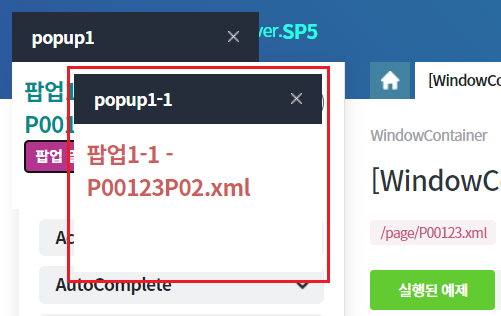
팝업 "popup1"에서 닫기 버튼을 클릭합니다.
[브라우저(Chrome) 실행 예시 - PC]
(디바이스에 따라 아래의 참고 이미지가 다를 수 있습니다.)
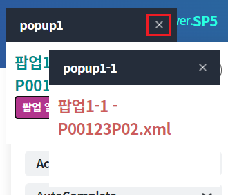
팝업 "popup1"은 닫히고 팝업 "popup1-1"은 열려 있음을 확인합니다.
[브라우저(Chrome) 실행 예시 - PC]
(디바이스에 따라 아래의 참고 이미지가 다를 수 있습니다.)
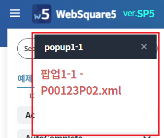
영역 [frameModal 활성화]의 WindowContainer의 윈도우 "P00123S01"에서 버튼 팝업 열기를 클릭합니다.
[브라우저(Chrome) 실행 예시]
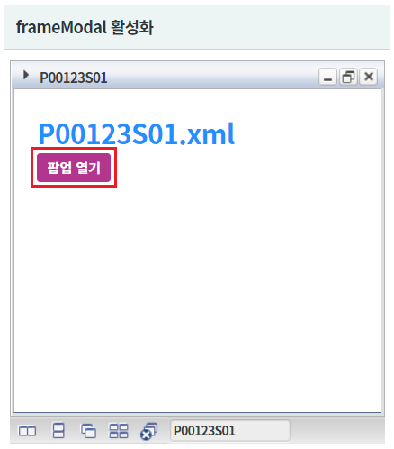
윈도우 영역에 팝업 "popup1"이 열린 것을 확인합니다.
[브라우저(Chrome) 실행 예시 - PC]
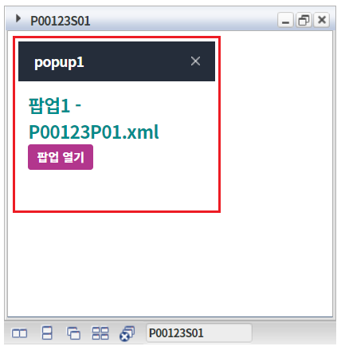
팝업 "popup1"에서 버튼 팝업 열기를 클릭합니다.
[브라우저(Chrome) 실행 예시 - PC]
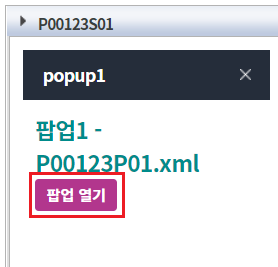
윈도우 영역에 팝업 "popup1-1"이 열린 것을 확인합니다.
[브라우저(Chrome) 실행 예시 - PC]
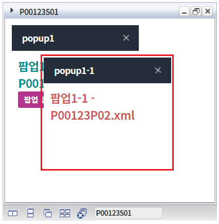
팝업 "popup1"에서 닫기 버튼을 클릭합니다.
[브라우저(Chrome) 실행 예시 - PC]
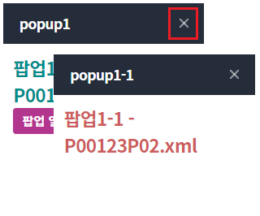
팝업 "popup1"과 팝업 "popup1-1"이 닫힌 것을 확인합니다.
[브라우저(Chrome) 실행 예시 - PC]
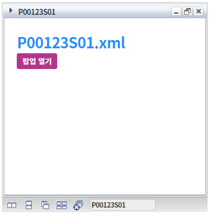
STEP1. WindowContainer의 속성을 정의합니다.
[필수] frameModal="true" //[default: false, true] popup open시 WFrame 안쪽에 팝업을 띄우고 modal을 표시할지 여부.
[필수] frameMode="wframe" //[default:iframe, wframe] 윈도우 내부 frame을 iframe으로 생성할지 wframe으로 생성할지를 결정하는 속성
그림 1.웹스퀘어5 SP5 스튜디오의 Property View(속성창) 예시
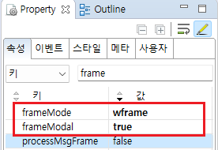
[소스 코드 예시]
<!-- windowContainer 의 소스 본문 예시 --> <w2:windowContainer frameModal="true" frameMode="wframe" id="wdc_exam2"> <!-- 중략 --> </w2:windowContainer>
STEP2. 원하는 시점에 Window 생성 스크립트를 작성합니다.
[소스 코드 예시]
//예제 파일의 경우 scwin.initPage에 작성되어 있습니다. //windowContainer "wdc_exam2"에 윈도우 생성하기 wdc_exam2.createWindow({ "title": "P00123S01", "src": "/page/P00123S01.xml", //파일명 "windowId": "w_P00123S01" });
frameModal
frameMode
[웹스퀘어5 SP5 개발 가이드] WindowContainer
링크 : https://docs1.inswave.com/sp5_user_guide/2059d4ce88b2fc16#c65cb349eb266637
[웹스퀘어5 SP5 개발 가이드] WindowContainer - 팝업
링크 : https://docs1.inswave.com/sp5_user_guide/2059d4ce88b2fc16#3bcac17a71b68a20
WindowContainer의 지정한 프레임 영역에 팝업 표시
링크 : https://youtu.be/Ch-k_-Vo8Kk
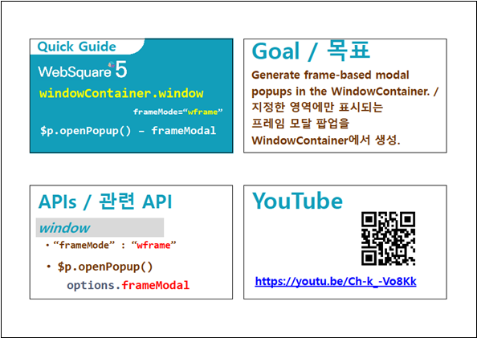
WindowContainer의 부모 – 자식 팝업 닫기
링크 : https://youtu.be/kTIlquVF8yw
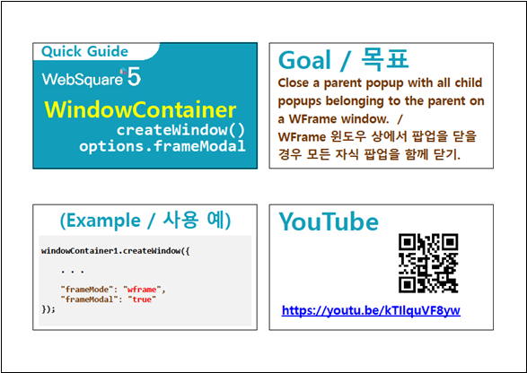